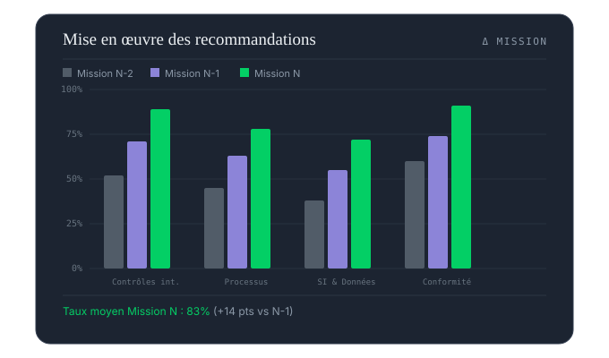
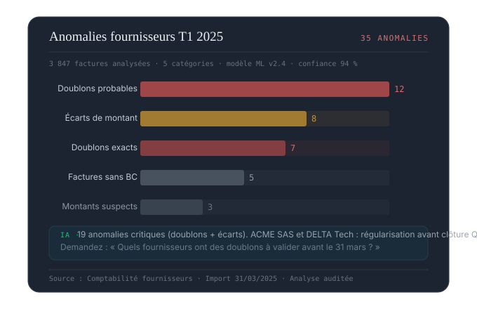
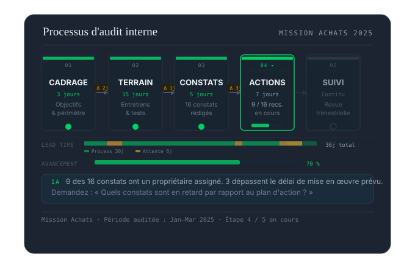
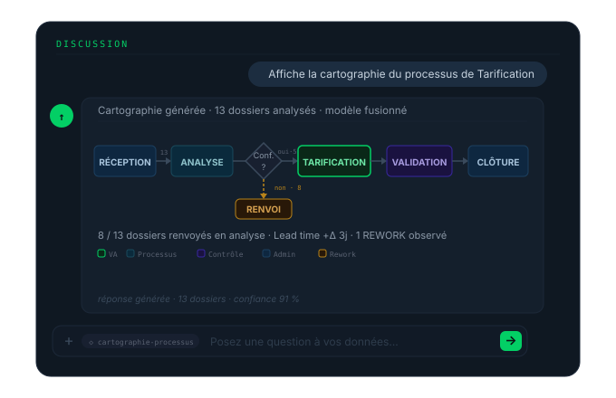

Función — Auditoría y Consultoría interna
Sus misiones de auditoría producen datos — QueryVision los hace consultables, visualizables y compartibles en cuestión de segundos.

Análisis de datos
Formule sus preguntas directamente sobre los archivos de la misión — conciliaciones, anomalías, desviaciones respecto al presupuesto — sin retratamiento manual.

Visualización
Visualice la distribución de los hallazgos por naturaleza, por proceso y por entidad — y priorice las recomendaciones según el impacto estimado.

Consultoría interna — cartografía de flujos
A partir de los datos de sus expedientes tratados, QueryVision reconstruye la cartografía real del proceso — con distinción VA / NVA, identificación de las devoluciones, cálculo del lead time observado y puesta en evidencia de las etapas prioritarias que optimizar.

Seguimiento longitudinal
Compare los resultados de misiones sucesivas sobre el mismo perímetro — mida el impacto real de sus recomendaciones en los indicadores de control.
Corpus profesional integrado. El marco de referencia y las normas IFACI (auditoría y control internos), así como los métodos Syntec Conseil, están precargados en Query Vision y Spot Vision — sus hallazgos se vinculan a las normas de la profesión.
Siguiente paso
Una demostración con una muestra de sus datos y su vocabulario de negocio. Sin compromiso, y sin que nada salga de su perímetro.